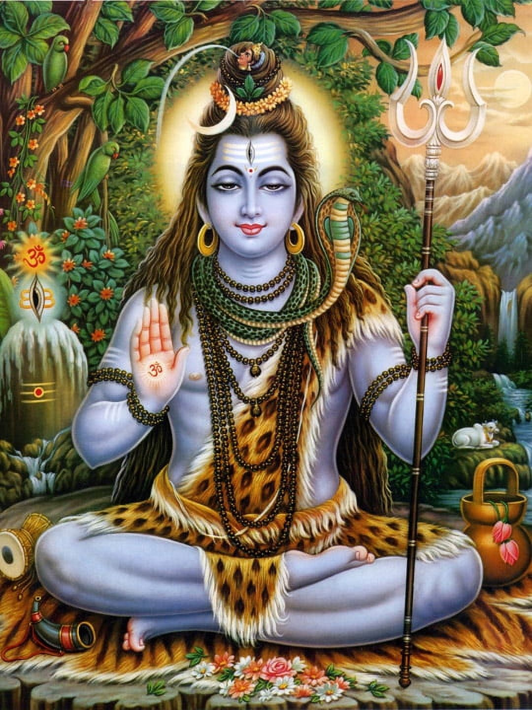

Lord Shiva
Lord Shiva, also known as Mahadeva, is one of the principal deities of Hinduism. He is known as the destroyer and transformer within the Trimurti, the Hindu trinity that includes Brahma and Vishnu.
Symbolism and Attributes
Shiva is often depicted with a third eye, a snake around his neck, and the crescent moon adorning his head. He is usually shown meditating in a yogic posture.
Festivals
The major festival associated with Lord Shiva is Maha Shivaratri, which celebrates the marriage of Shiva and Parvati and the night Shiva performed the Tandava dance.
Mantras
One of the most popular mantras is the 'Om Namah Shivaya', which is chanted by devotees to seek the blessings of Lord Shiva.